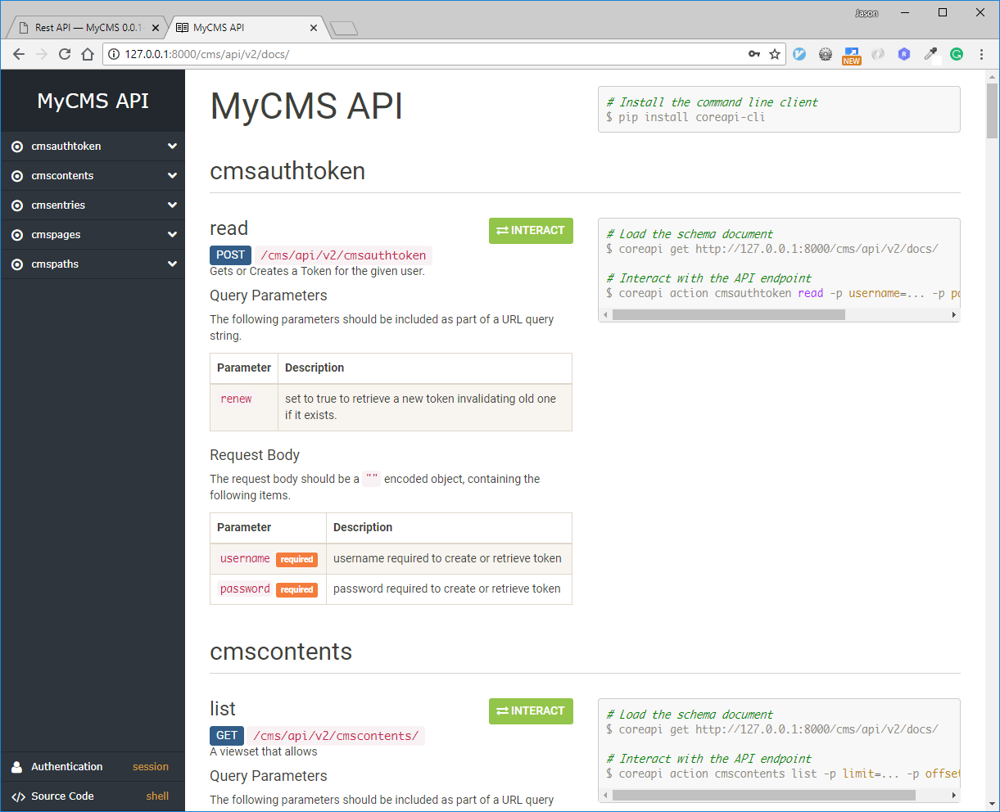

Rest API¶
{kind=link}
The module mycms.api is a DRF based api which allows REST calls into the CMS contents stored in the mycms database. The REST API documentation and interface can be reached at /cms/api/v2/docs/ of a mycms instance.
The web interface to the api exposes all the possible operations that we can do to the MyCMS database and is the best way for understanding and testing the various api calls.
The API exposes the following endpoints:
cmsauthtoken
cmscontents
cmsentries
cmspages
cmspaths
Tutorials¶
Create a new CMSEntry using javascript¶
Introduction and Some Background:
Every mycms page defines a view_json object which contains information about the page. This can be seen in the html page for example:
var view_json = {"id": 1, "title": "Yet Another CMS.", "path": 1, "slug": "yet-another-cms", "page_type": 5, "template": null, "frontpage": false, "published": true, "lists_include": false, "page_number": 1, "created_by": 1, "logo_url": "/static/mycms/images/png/default.png", "path_str": "/", "content": [], "date_created_epoch": 1460237699000, "date_modified_epoch": 1460237699000}
In order to create a CMSEntry we use the endpoint /cms/api/v2/cmsentries/id/create_child/ where id is the parent of the page we want to create.